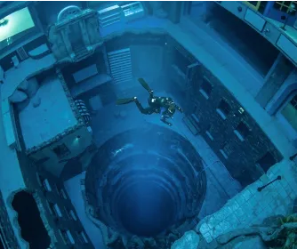
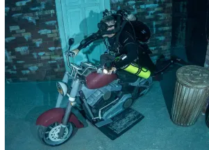
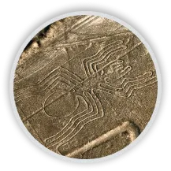
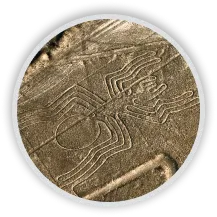

Dubaï a inauguré la plus profonde piscine du monde en Juillet 2021. Un bâtiment flambant neuf de 1500 m2 en forme d'huître géante accueille La Deep Dive Dubai. Avec une profondeur de 60 mètres, elle renferme ainsi 14 millions de litres d’eau douce et chaude. C'est le paradis des plongeurs. Elle accueille tous les niveaux, du débutant au professionnel. Toutes les formes de plongée y sont possibles : en apnée, en bouteille, ou encore avec tuba. Cependant, elle m’intéresse pour une tout autre raison : son ambiance unique et inhabituelle.
 Photographie de l’intérieur de Deep Dive DubaïDeep Dive Dubai nous transporte dans une cité engloutie sur laquelle la nature reprend peu à peu ses droits. La mythique Atlantide est une référence évidente. Pourtant, les plongeurs vont circuler dans les ruines d’une ville contemporaine. Ils peuvent ainsi croiser une voiture abandonnée, un baby-foot, des jeux d’arcade, des pièces entièrement meublées prêtes à être découvertes. Ce décor animé par 164 jeux de lumières et des ambiances sonores donne une impression étrange. On dirait ainsi que notre présent est devenu un passé et qu'il est redécouvert dans une période future.
 Photographie d’un espace intérieur de Deep Dive DubaiHormis les visiteurs, cette piscine ne contient aucune autre forme de vie, qu'elle soit animale ou végétale. Ces éléments renforcent l’atmosphère post-apocalyptique qui y règne. Si l’on met de côté l’aspect touristique de cet équipement, cette piscine représente le mystère des profondeurs, l’angoisse de l’inconnu. En conclusion, elle nous transporte dans une autre dimension. Ce lieu vient nous rappeler que notre époque contemporaine aura une fin mais qu'elle pourra aussi revivre dans le futur sous une nouvelle forme.
 Ville abandonnée de Kolmanskop en Namibie
Ville abandonnée de Kolmanskop en Namibie
 Réservoir de Montsouris à Paris
Réservoir de Montsouris à Paris
 The city de Michael Heizer dans le Nevada, USA

Géoglyphes du désert de Nazca au Pérou
The city de Michael Heizer dans le Nevada, USA

Géoglyphes du désert de Nazca au Pérou